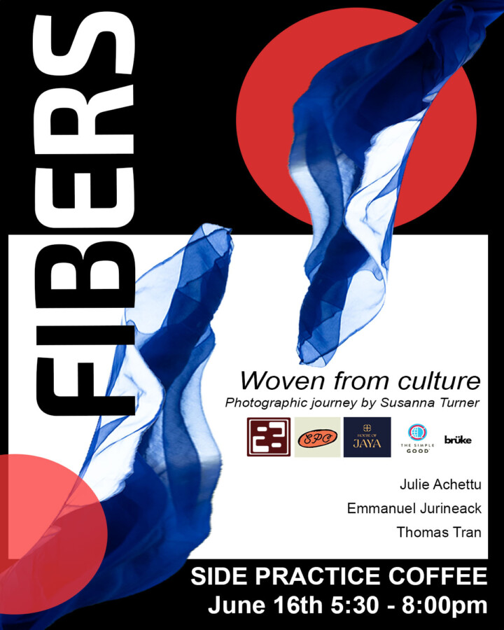

Fibers Exhibition
You are invited to the Fibers Exhibition, held at Side Practice Coffee. Fibers is an eight-portrait series that explores cultures once left behind, and how fabrics and garments preserve the memory of migration, survival, and beauty through photography. Each portrait weaves together visual storytelling and material symbolism, reflecting how identity is both preserved and transformed across time and distance.
This exhibition is a gathering of Chicago artists and community members, creating a space to engage, reflect, and build connections.
Please join us for a panel discussion starting at 7pm , following the exhibition with: Susanna Turner (Editorial & Fashion Photographer) Julie Achettu (Co-Founder of House of Jaya & Educator) Emmanuel Jurineack (Model, represented by The Rock Agency) Tom Tran (Actor, represented by Paonessa Talent Agency)